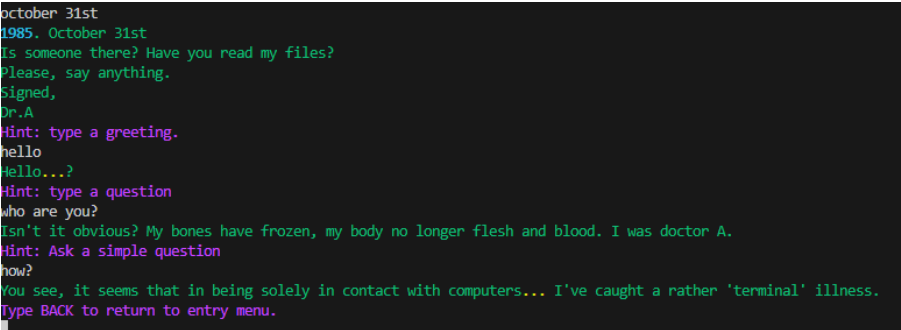
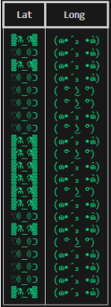
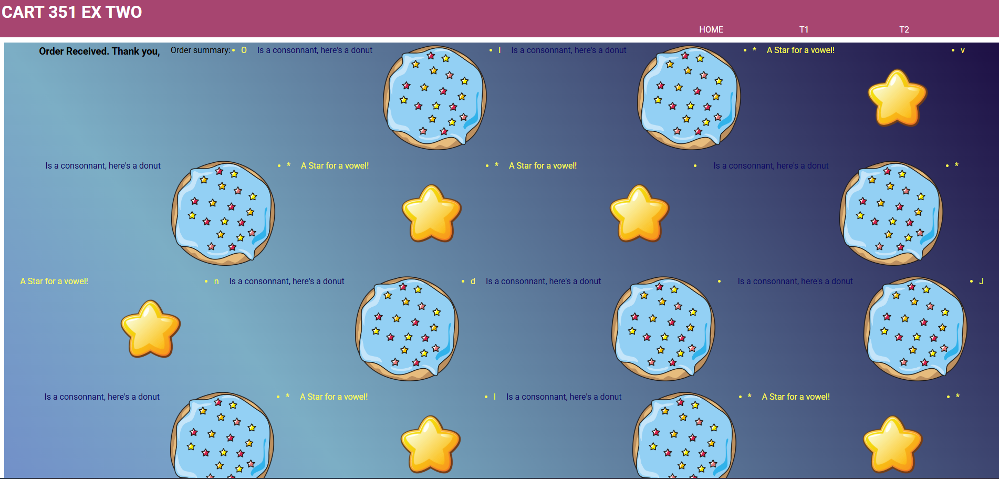
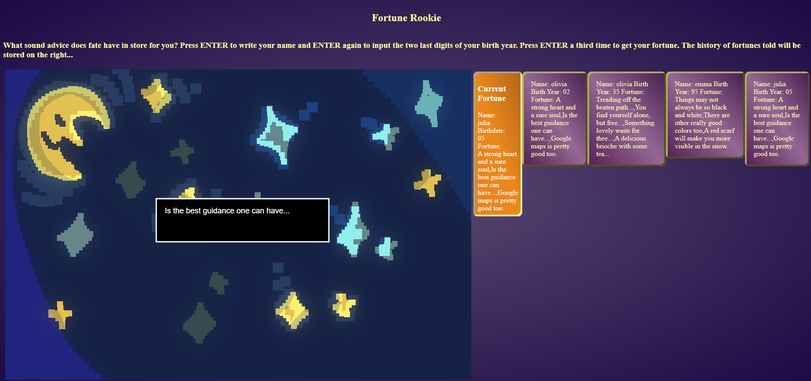
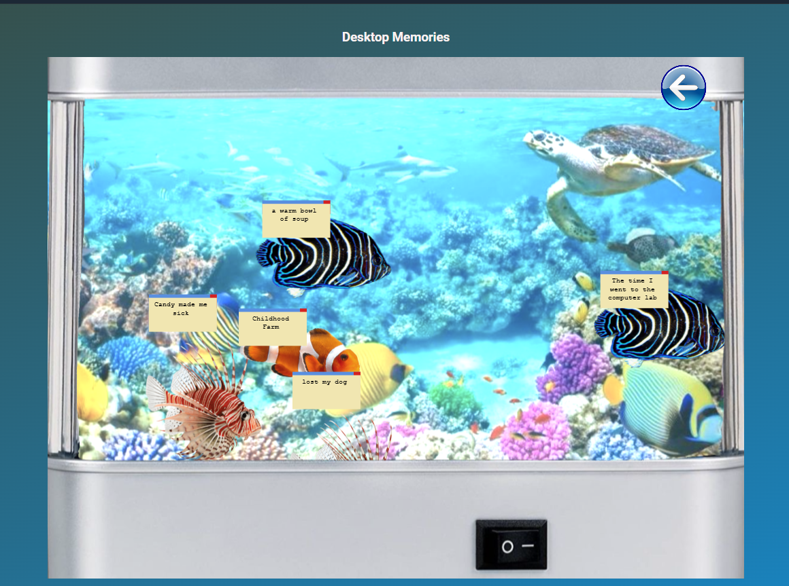

Week 01 started with an introduction to the class and a syllabus overview. As a class, we interacted with a website which could recieve input from the entire class, displaying messages that were inputted by the users. Although the exercise was simple, I am interested to see what type of wider implementations this sort of group-oriented information input can have, and how it can artistically change an interactive project.
I am also very interested in the course's focus on learning Python. Up until now I've only had experience with JavaScript and, knowing that Python is widely used and applied in various ways, I am excited to be able to learn such a flexible language.
This week I began doing simple coding in Python through the Worksheet that was assigned, here are my impressions so far.
I find that, so far as the simple worksheet goes, the syntax is easier for me to grasp compared to JavaScript, and reads more easily like English. This being said, I am able to grasp the logic of the code better. I even found that while I would have a moment of confusion at first glance at the code to edit, I would quickly be able to understand it, especially by reading it out loud. I hope that this keeps up further down the line and that I can more easily use this language to code complex and interesting projects, taking advantage of Python's affordances.The only thing that is surprising to me in terms of the python workflow is the need to set up an 'environment' which, to my understanding, can actually interact with other aplications in the computer being used if not set up correctly, especially while working on more complex projects. I am also intrigued by the fact that the work being done in the script cannot immediately be visually displayed, such as when I was learning JavaScript. In any case, these are workflows I will have to get used to, and I am nonetheless interested in future projects.
After the in-class python exercise, I still hold up my opinion that I am grasping Python better than JavaScript so far. As well, I am really intrigued with the creative potential that accessing APIs can have for future projects. With so much readily accessible information, I can only to begin to imagine how this data can be manipulated in unique ways to create narrative and visually interesting interactive code.
Flask seems to me like like an interesting middleground between JavsScript and Python. Of course, Flask is powered by Python but a someone who has only used Python for terminal input up until now, I am very intrigued by the possibility to start building front-facing user interfaces. Quite unfortunately, I am coming down with a cold this week but nonetheless I am anticipating the first project and am an interested in what sort of end product will come from its guidelines.
Although class was sadly cancelled this week, I took the the extra time to complete Project01 with Julia. On completion of the project, here are some of my thoughts:
Firstly, going back to my post in week 03, it was interesting to dive into the creative potential that Python holds, even in a simple terminal-based program. What strikes me most is how easy the process is to take input from a user and return information based on it, creating a solid base for simple interactivity. The way that Python functions allows for an easy flow from program to user, which is definitely something I would like to further look into and utilize in future projects. 
As seen here, using simple 'if' statements allowed to create a simulation of a conversation.
As well, the project allowed for the start of some experimentation with data. Considering that our project revolved around a scientist character, we tried to take advatange of the data for storytelling in simple but unexpected ways. For example, I really liked the graph that displayed a different ASCII face depending on the AQI information.

A snapshot of the ASCII face chart.
Although the project was fairly simple in its design, I believe that it was a good introduction to utilizing Python for different forms of storytelling, and represents different aspects of how Python's affordances can be used in future projects.
This week saw a deeper dive into Flask and the assigning of the in-class exercise 02, which I finished later in the week. Admittedly, during the in-class lecture I felt as if I was a little lost with the material. However, as I started the in-class exercise, I quickly became accustomed to the Flask workflow, and the lesson began to make sense to me. In fact, the assignment took little time to complete. The creative use of inputted data was particularly interesting. During project 01, the user input was limited by the keywords that were predetermined by my (and Julia's) code, with the more creative code being used to manipulate the data from the API. However, it seems that the flask pipeline, as was practiced in the in-class assignment, will lead to a more dynamic user experience, given that the forms can accept many different types of input before returning them to the user. For example:

In the image above, done for the in class assignment, information from a form was transformed so that a different message and image would be displayed depending in the existence of a vowel in the data. Of course, this is a very simple sort of manipulation of user data. However, the mix of instant visible results, in the form of a Flask application, and the ability to accept a wider input from the user builds the base for interesting interactive experiences.
Sessions and cookies were covered this class, which to my understanding, provides the application with a way of storing data, in the form of cookies, in order for it to be able to not require a full page refresh every time something is meant to change in the user's view. This ensures a more seamless experience.
I am excited to begin working on project 02, which requires that we create a full working Flask application, taking information from the users and displaying it in an interesting way. Although a little intimidating for my first time, I am invested in creating a visually and conceptually intersting interactive experience, all the while building up knowledge to create a more well-rounded final project.
This week's course was focused on saving data to a JSON file based on user input. It was very interesting to see the data be added in real time, and to see the JavaScript, Python, html and JSON files all working together. I thought back on my past semesters where I had learned how to use these languages individually, and, in a way that felt rewarding, I could see all of these different languages come together in order to make the beginnings of a functioning application. In lieu of this, for the assigned class exercise I reached back to a p5 application I had made for my JavaScript class during my first semester, and added the JSON reading code. Unfortunately, I do find that I was rushed this week and I did not implement this new knowledge to the old project as meaningfully as I could. However, it will nonetheless act as a good base and reference for future projects which combine p5 interactivity and data storage.
This week, Julia and I teamed up once again to create project 02, Fortune Rookie. As assigned, it applied the JSON reading functions in a more meaningful way through a Flask application. For this project, we developed a simple p5 application which took the user's name and birthday and, based on the last two digits of their birthyear, returned one of four fortunes.

The initial state of the application upon being launched.
After the data was inputted, the Flask application stored this information in a JSON file, then outputting it in a DIV, so that as different users input their own information, their results are stored as "cards" which can be seen collectively. While rather simple in its functionality, it was fun to begin thinking about storing larger amounts of data, and how this would create a "community" around it through the different users. Thinking back on it, it would've been fun to add another piece of user information; a comment on their recieved fortune which may help to emphasize the connectivity created through the application's display of information

In this image, a player recieves a fortune and can view the past user's results as well.
I think that this project also integrates well with this week's most recent lesson on Mongo, which allows for the data base to be stored on a cloud, allowed for larger amounts of data that can be accessed remotely. How would larger amounts of user input change the experience? What aspects of the application would need to be moved or changed? These are some topics which I began to think about during the lesson with regard to Fortune Rookie and future applications based on the same languages.
Overall, while a program could always use more polishing and refinement, I am rather pleased with what we did given the time that we had to complete the assignment. As well, I am looking forward to combining the data displaying affordances of Flask and JSON, with the storytelling explorations through code of project01 in order to create a strong project 03.
Instead of a coding exercise for this week's in-class assignment, the time was taken instead to view other student's project 02 and write a response to submit. This gave me the oppertunity to see other people's work, which we haven't had yet as a class. Not only was it a nice change of pace and an excuse to have conversation with classmates, but it was also useful in the fact that it allowed for oppertunities to ask about the code and techniques used in these other projects. I was glad to ask about these things and gather inspiration for our third and final project, as I am still debating what I want to work on. One student suggested expanding on "Fortune Rookie," transforming it into a more colalborative application with the use of Mongo. While this is an interesting suggestion, I am thinking that I would rather develop a new program, only building off of what Fortune rookie does. In fact, I enjoy the flexibility of mixing p5 with Python and pure JavaScript, especially given its affordabilities to be especially "game-like."
For this in-class assignment, we applied what was learned the week before, which was fetching from Mongo the hosted JSON file. Interestingly, while I found actually extracting and organizing the informaiton to be quite easy, the most challenging part was going back into my memories from last semester in order to visualize the data with JavaScript. While I have done some JavaScript this semester, it was relatively limited. However, although I did admittedly have some difficulty with a few areas,I am still glad to have had the refresher, as it opens up new possibilities when it comes to the visual part of project 03. Although I do think I will still use p5 for a large part of the project, I did really like how in Project 02 (Fortune Rookie), the p5 canvas had the ability to affect elements outside the canvas. That being said, it makes me think of how this idea coul d be applied to a more artistic application in order to create a feeling of a program interacting with elements beyond itself. Like, for example, a game which unexpectedly affects the webpage it is being hosted on. In any case, it is an intersting concept to take into account now that I need to begin work on project 03.
Wow! I can't believe it's already the end of the semester. I've submitted my final project and as of now the only thing I have left to do is write this last journal entry, so now seems like a good time for some reflection. Firstly, Teaming up with Julia again, I am quite happy with the way that our final project came out. I've said a lot of my thoughts in the reflection for the project, but here I'd like to say that I feel like Julia and I ended up exploring what we wanted to in terms of explorable, networked spaces.

A screenshot of the desktop state from "Desktop Memories"
Visually and thematically the project feels cohesive, and I like that in the end we were able to create a data visualisation that connected the more thematic, almost storytelling elements with the technical parts of Mongo and Python.

The mediaplayer in "Desktop Memories" represents each past user as a sprite related to the type of memory they submitted.

The fish nightlight visualisation, while not interactive, is my favorite visually.
Not only was this project fun to work on, especially due to its strong visual themes, but it really did get me thinking more about how tradionally non-artistic mediums such as data and coding can be renterpreted into more artistic and expressive uses. Of course, I already knew it was posible due to my interest in gamemaking, however, I feel like trying to tie in interactive and visual concepts with a data-focused lens really got me thinking of the potential of creative expression outside of gamke-making while still staying within the sphere of computers.
Overall, this was a very enjoyable semester. Not only did I learn about Mongo, Flask and coding with Python, but I also had the oppertunity to practice and revisit p5, JavaScript and HTML, all of which I feel more confident in.
Thank you very much and happy holidays!